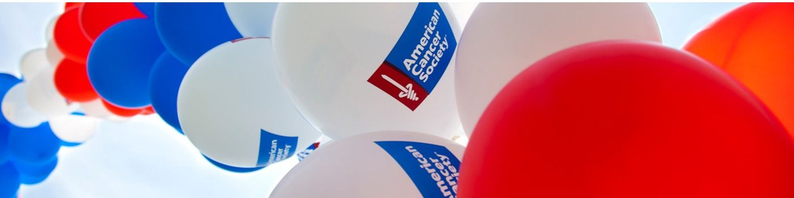

Support
Your Name Here
in the 328 mile Pan Ohio Hope ride from Cleveland to Cincinnati!
July 25-28, 2019
Open your phone's camera and scan the QR code to go directly to my donation page
Enter your Donation URL

Or visit
...
Print Flyer